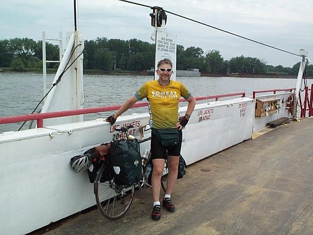
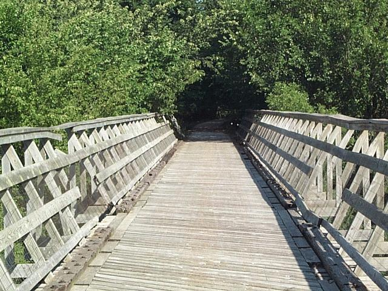
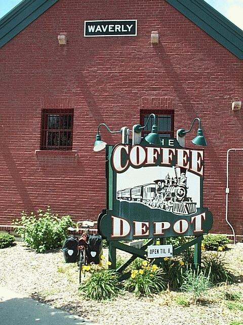
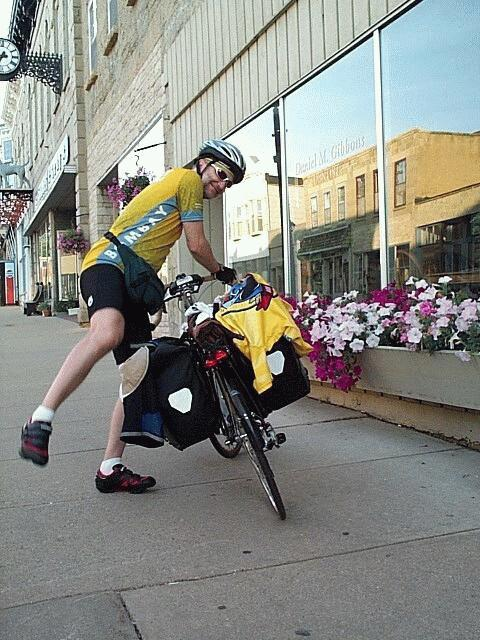
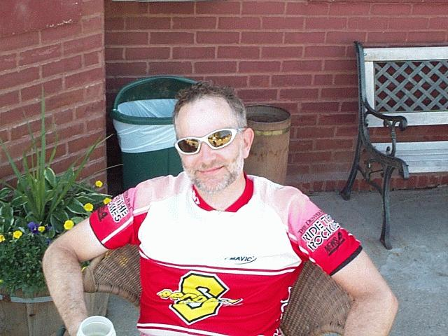
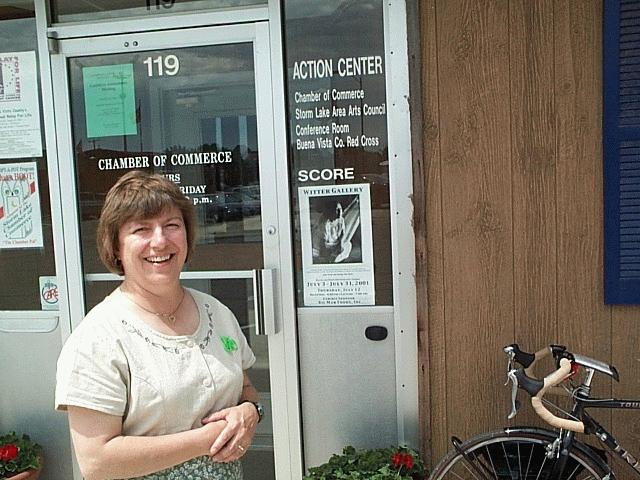
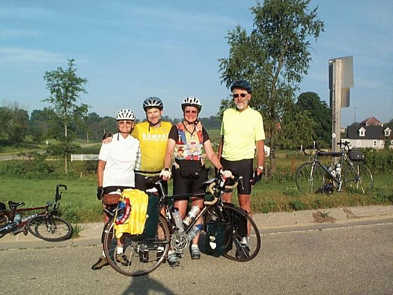
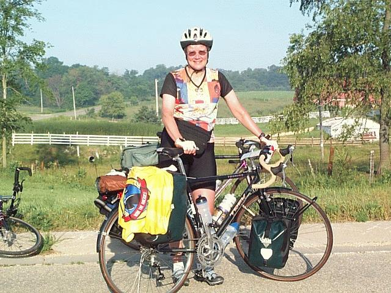

| He Must be Bicycling to RAGBRAI | |||||||||||||||||||||
 (click photo to expand) Crossing the Mississippi River at Cassville is easy. On the Iowa side there's about a mile of gravel road and the ferry does not run on Mondays or Tuesdays.       
|
Storm Lake, IA
(July 11, 2001) In just
five days about 14 percent of miles are now behind me. Tailwinds
helped out on many of the 405 miles of an estimated 2,800 miles from
Madison, Wisconsin to Seattle, Washington.
What exactly have I gained from the journey so far? I've found Iowa to be a weird and pleasant place to be. The heat and hills in Wisconsin were just plain hard. Motorists seem to be nicer in rural Iowa than they did in Wisconsin -- it is just usual for a motorist in Iowa to move so far to the left when over taking a cyclist that they occupy the on-coming traffic lane completely. Although I'm happy to say that traffic has been so light in both Wisconsin and Iowa that my sample size is small. Perhaps my favorite interaction with Iowans so far is coffee with the retired railroad workers club in Eagle Grove. There I was given good route advice and hints (which I failed to pick up on) that the map I was using was flawed. I would later pay for my inattention with an extra ten miles of pedaling. One of the railroad lines these guys worked on was now a bike trail and one of them, who was also a cyclist, was up to date on the status of all of the bridges. Another favorite interaction was outside the coffee house in Waverly. I was so excited to have made it there -- 30 miles past my planned stopping point for the day -- that I immediately looked for some one to take my picture. I took my chances with two young girls. I got camera out, the setting right, framed the picture, and told her what do and then suddenly she says, "gotta go" and pedaled off on her small pink bicycle. I still laugh when I think about it. I was surprised by how thrilling it was to enter Storm Lake, IA from the east on County C48. The sight of 250 plus windmills turning on the horizon above the lake actually sent chills down my spine -- or was that the effect of 105 miles of cycling that day. Iowa is a pretty good place for the touring cyclist. There are little gems like the small store in Alexander where a hot lunch is made to order. And there are scattered niceties like the coffee house in Waverly and Boz Wellz in Strom Lake where the citrus Salmon is served with a slight oriental flare. Some of the people are easy to engage while others are closed shells. Until I've engaged some one in conversation, I'm generally ignored by the men folk and given the strangest looks by the women. It's a sort of, "what planet did you drop off of" look. Although lately, I've not had to make any effort to engage anyone as people have been coming up to me to ask, "so you're headed to RAGBRAI, are you?" Well, no and I'm sure glad I'll be long gone when the swam buzzes through these parts the week after next but this I leave unsaid. Soon I'll be leaving Iowa behind and I guess it's possible that I'll see a few cyclists heading to RAGBRAI from the west. On my way to Storm Lake, I did meet a fellow solo tourist heading from Seattle to Maryland. I got a lot of good information from George -- he's taken the route I've planned in reverse. He reports that he's had nothing but headwinds except for three days. You know, you just can't tell what will be in store for you on the road ahead. I guess that's why I'm heading to Seattle and not to RAGBRAI after all. -- joe Update: July 12th |
||||||||||||||||||||
{kind=link}
{kind=link}
{kind=link}
{kind=link}
{kind=link}
{kind=link}
{kind=link}